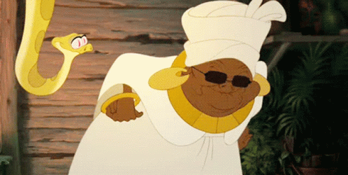

Mama Odie é uma gentil velha sacerdotisa de vodu que vive nas profundezas dos pântanos da Louisiana.Ela é uma das protagonistas menores no filme
A Princesa e o Sapo, onde ela atua como Fada Madrinha do filme. Ela é dublada por Jenifer Lewis. O companheiro mais próximo de Mama Odie é a cobra Juju,
que atua como seu assistente, constantemente ajudando a mulher com várias tarefas ao longo da sua casa.
Sendo cega, Mama Odie geralmente pode encontrar-se em perigo cômico em sua casa na árvore, apenas para ser salva por Juju.
O amor de Mama Odie para ele é mostrado várias vezes, tratando-o como seu próprio filho muitas vezes. Mama Odie também parece ter uma boa amizade com
Ray o Vagalume e sua família antes dos eventos do filme, admirando a coragem da avó de Ray, especialmente.